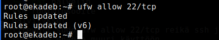
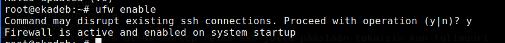
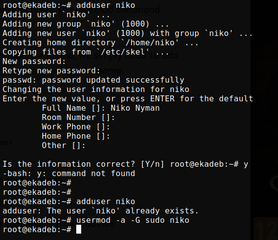
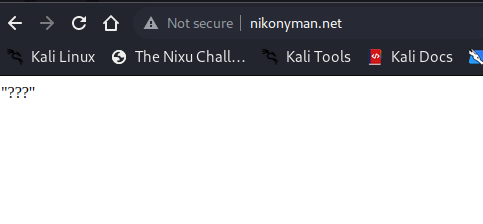
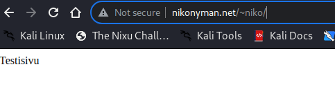

Palomuuri, asetukset ja päivittäminen
Tehtävänäni oli asentaa vuokraamalleni serverille palomuuri, laittaa perus asetuksia kuntoon, asentaa Apache2, sekä ladata päivitykset
Aloitin asentamalla palomuurin komennolla apt-get install ufw. Jonka jälkeen tein "reiän" palomuuriin shh yhteydelle komennolla ufw allow 22/tcp.
Tämän jälkeen annoin komennon ufw enable jonka jälkeen käynnistin järjestelmän uudestaan. Koneen uudelleen käynnistyttyä tarkistin pavelun tilan service --status-all komennolla - ufw kohdalla oli + merkki joten palvelu oli päällä.
Seuraavaksi lisäsin käyttäjän sudo oikeuksilla, jotta minun ei tarvitsisi käyttää root tunnuksia kirjautuessani palvelimelle.
Seuraavaksi kirjauduin ulos palvelimelta ja kirjauduin takaisin sisään juuri luomillani tunnuksilla. Seuraavaksi päivitin pakettilista sudo apt update, jonka jälkeen asensin päivitykset komennolla sudo apt dist-upgrade. Seuraavaksi asensin Apache2 weppipalvelimen komennolla sudo apt-get install apache2, sekä käynnistin palvelun komennolla sudo systemctl start apache2.
Korvasin oletussivun muokkaamalla index.html tiedostoa sijainnista /var/www/html/. Seuraavaksi tein lisäämälleni käyttäjälle (niko) public_html kansion sijaintiin /home/niko, sekä loin index.html tiedoston kansion sisään.
Kokeilin sivuja, mutta ne eivät toimineet. Muistin että minun tulisi myös avata userdir moduuli ja tein sen komennolla sudo a2enable userdir. Käynnistin apachen uudestaan sudo systemctl restart apache2, mutta sivut eivät toimineet vieläkään - selain vain näytti raksuttavan muttei antanut mitään virheilmoituksia, sivun lataus tuntui kestävän.
Ihmettelin miksi sivut eivät lataudu kunnes muistin etten ollut avannut "reikää" Apachelle. Tämä korjautui komennolla sudo ufw allow 80/tcp. Tämän jälkeen sivut lähtivät toimimaan.
Käyttäjäkohtainen sivu:
